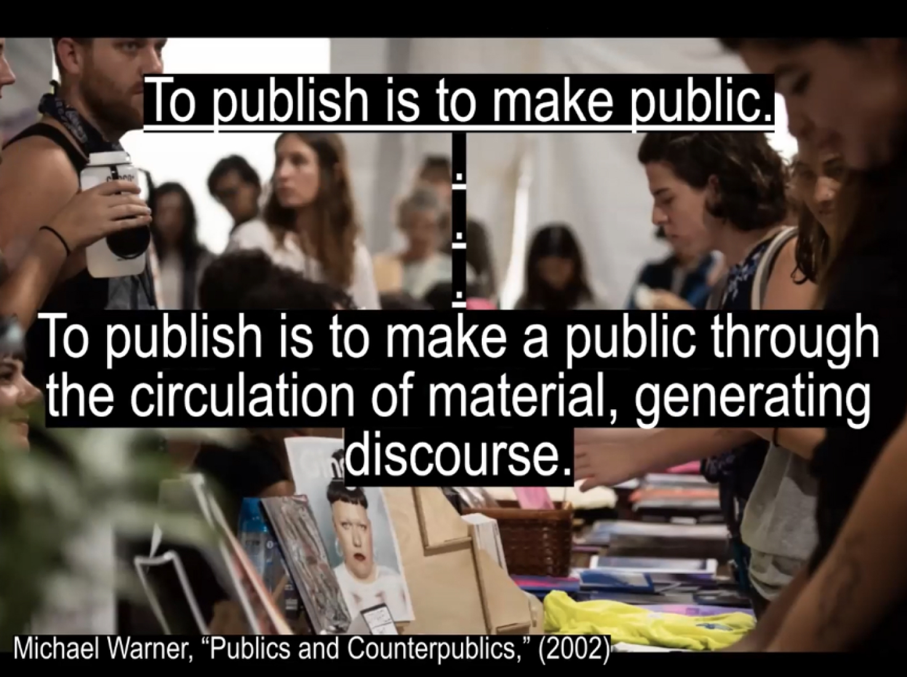
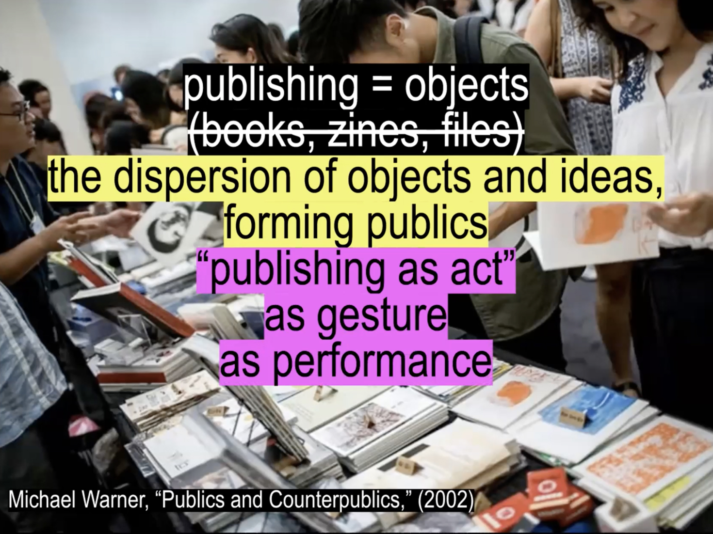
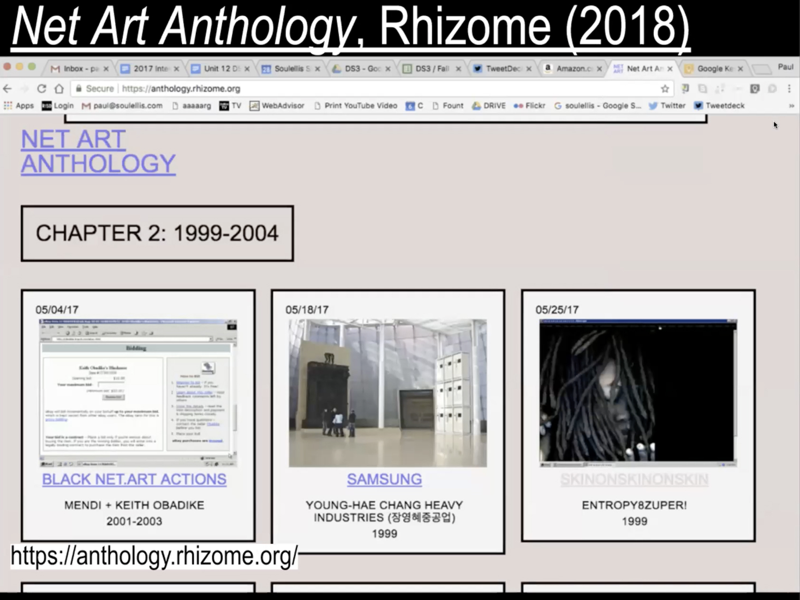
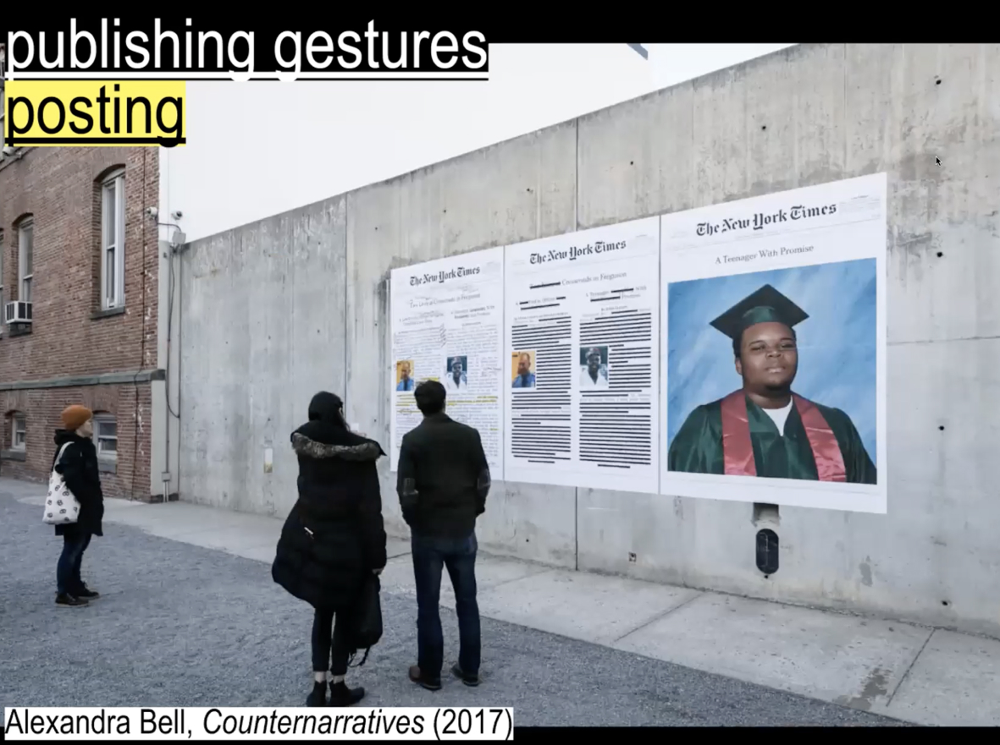
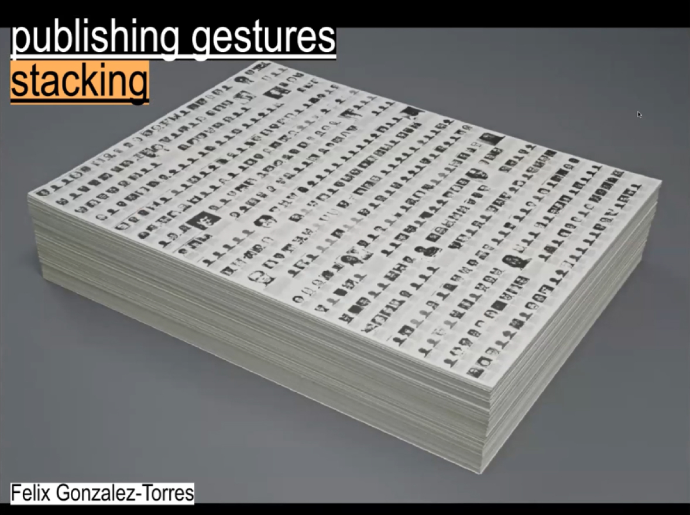
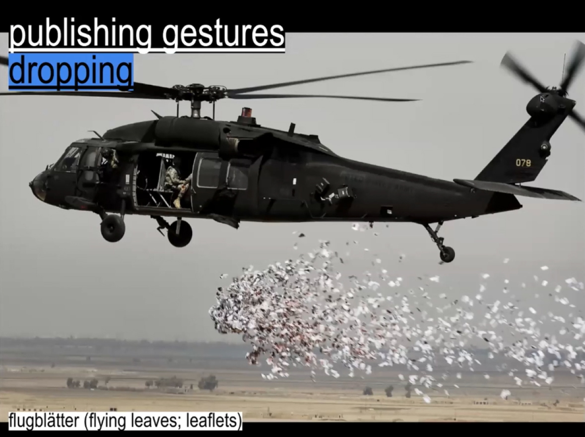
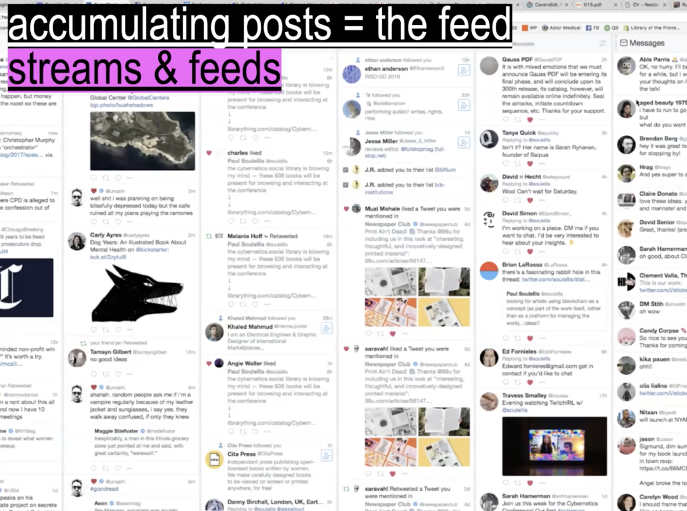
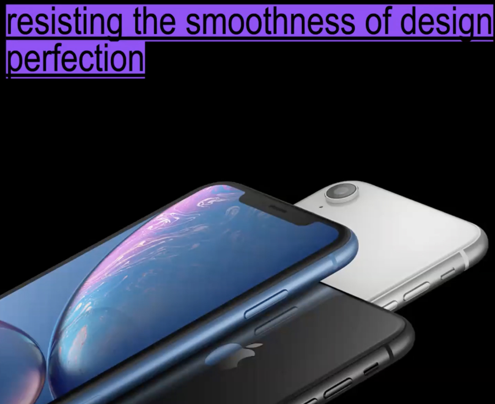
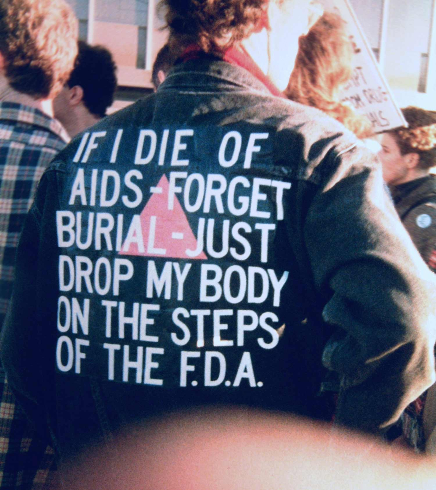

“Selecting something to amplify and post it in public to
give it to audience in a basic and analogue way.”

“It is all about movement of the digital material.”

“Foundational and Human’s gesture to put things on walls to communicate with others.”

“Beyond the post, stacking - basic. One of the most common way to distribute printed material in public space by using gravity.”

“The idea of forcing an act of publishing.”

“Most common currently.”

“Always questioning, always going deeper to
examine the less visible ideaology that are
looking behind the design products that govern
how we live and communicate.”

“It’s an active protest, it’s an art, it’s a gesture of
making public, it’s an urgent artifact that
contains the potential for radical action. .”